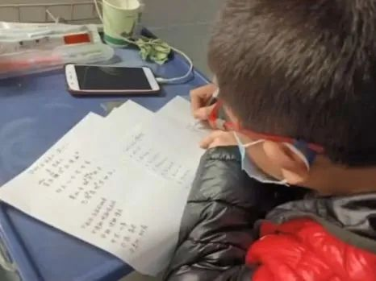

口述实录 | 我在武汉方舱医院14天，有了一种胜利在望的感觉
原文链接 备份链接 从2月7日到现在，一方面大家的活动越来越丰富，另一方面由于轻症患者比较多，人们病情都慢慢恢复。所以，我看到每个人脸上的笑容都变多了。 口述 | 余 毅 整理 | 王仲昀 这一个月终于要过去了。 2月21日上午，在等待几 …
共青团中央
当方舱医院小朋友说他无聊了(00:23)
武汉方舱医院内
10岁的小朋友说“好无聊啊”
很快，相关话题
#当方舱医院小朋友说他无聊了#
就登上了微博热搜
于是
医护人员火速安排上了↓↓
医护人员给小朋友布置了作业：
“数学的话，这两张草稿纸都给你，
我下午下班的时候过来收，
语文和英语明天早上起来背。”


而小朋友真的开始
认认真真做起了医生布置的作业后


网友们也忍不住评论：
“这太暖心了！”
“方舱医生绝对全能型选手。”


还有网友脑补了小朋友的心情：
“我太难了。”
“我现在就是后悔，非常后悔。”


点亮在看
为小朋友鼓掌！
戳这里进入
“全国新型冠状病毒感染病例实时地图”↓↓↓
本期编辑 周玉华
推荐阅读


原文链接 备份链接 从2月7日到现在，一方面大家的活动越来越丰富，另一方面由于轻症患者比较多，人们病情都慢慢恢复。所以，我看到每个人脸上的笑容都变多了。 口述 | 余 毅 整理 | 王仲昀 这一个月终于要过去了。 2月21日上午，在等待几 …
原文链接 备份链接 住进武昌方舱的第二天，付丹看到有人在垃圾站收拾，将在地上扔得乱七八糟的垃圾捡起来放到垃圾箱里。她感到有些奇怪，清洁工怎么没有穿防护服呢。一问，原来那人是住在同一个病区的病友，住在159号床。 文***｜******* …
原文链接 备份链接 “我在窗台旁看了很长一会雪，特别想家，我们也在问什么时候结束。” “病友们觉得床上有电热毯，冷的话躲在被窝里就行了。医护人员没什么地方可以躲，所以除了个别患者有畏寒的情况，就让医护人员优先用（取暖设备）。” *“一 …
原文链接 备份链接 方舱的概念来源于军事领域。 不仅仅是患者，对很多医护人员来说，也是第一次接触。 2月5日晚，3家方舱医院启用，分别位于武汉洪山体育馆、武汉客厅、武汉国际会展中心，现在还有多家方舱医院正在修建。 这意味着万余名轻症患者可 …
原文链接 备份链接 伴随着火神山、雷神山医院开始收治病人，15家方舱医院陆续启动， 各省医疗队开赴武汉，武汉所有确诊患者与疑似病例都将“应收尽收”。 在人类抗击疫病的历史上，“武汉会战”已成为一场史无前例的超级行动 图/新华、中新 武汉 …